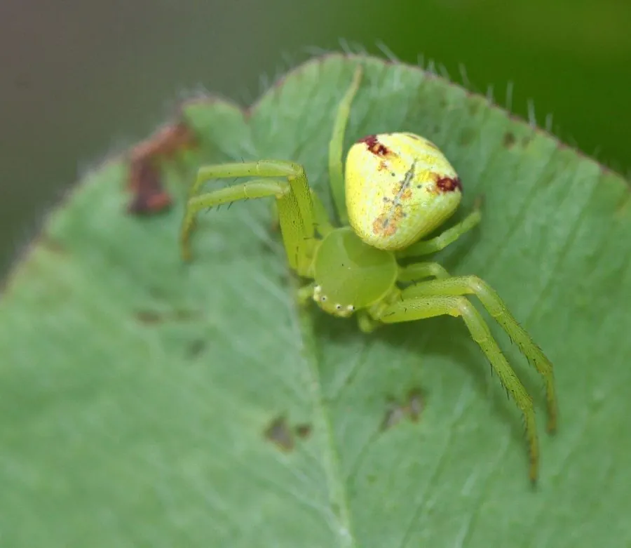

蛛形动物 · 动物界
三突花蛛 Misumenops tricuspidatus

体色能随花朵由白转黄的小型蟹蛛，前两对足长而张开，守在花上伏击访花昆虫，常见于草丛与农田。
- 分类
- 门节肢动物门纲蛛形纲目蜘蛛目科蟹蛛科属花蛛属
- 栖息环境
- 花丛、草丛、农田与灌木枝叶间
- 地理分布
- 中国南北各地及日本、朝鲜半岛、欧洲
- 保护级别
- 常见种，无保护需求；对农药较敏感
物种志
三突花蛛的雌蛛体长约五至六毫米，雄蛛更小。体色可随栖息的花朵由乳白转为淡黄，腹部宽大呈梨形，两侧有褐色斑纹，头胸部短宽。前两对足明显长于后两对，常向两侧张开，像螃蟹一样横着走，这是蟹蛛科的典型姿态。它不结网，靠保护色与耐心在花上守候。
它分布于中国南北各地以及日本、朝鲜半岛和欧洲，栖息在草丛、花丛、农田和灌木上，常在菊科、蔷薇科的花上埋伏，捕食访花的蝇类、蜜蜂和小蛾。捕到猎物后先用毒牙麻痹，再吸食体液。雌蛛产卵后用丝把卵囊裹住，守护在花叶间，幼蛛孵化后分散。它对农药敏感，在有机农田中数量更多，是花丛里常见的小型天敌。
形态与习性
- 体长雌蛛约五至六毫米，雄蛛更小
- 体色可随花朵由乳白转淡黄
- 足前两对明显长于后两对，向两侧张开
- 捕食伏击访花的蝇、蜂与小蛾
- 护卵以丝裹卵囊并守护在花叶间
- 习性不结网，靠保护色伏击
趣味知识
- 它会随着停歇的花朵换色，白花上偏白，黄花上偏黄。
- 它张开前两对足守在花心，访花的蝇一落下就被抱住。
- 它横着走的姿势和螃蟹一样，蟹蛛的名字就是这么来的。